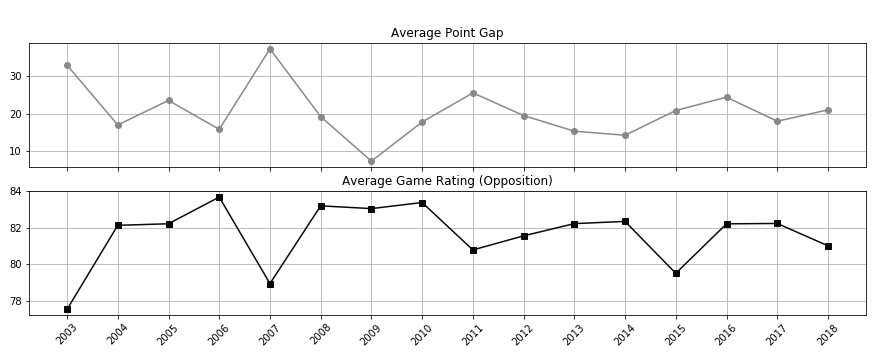

Point Gap and Rating
Relationship between point gap and rating over time

This plot shows the average point gap of all matches per year compared against the average ratings
of both New Zealand and the opposition side. The assumption is that a larger point gap would result in higher ratings for New Zealand.
As seen, New Zealand's ratings roughly follow the same trajectory as the point gap, sharing some peaks and some dips. However, the two are not
as closely correlated, with a coefficient of only 0.07.

What is interesting though, is that the opposition rating is more closely correlated to the point margin than is New Zealand's own ratings
with a coefficient of -0.77. The larger the point gap, the lower the opposition ratings are.